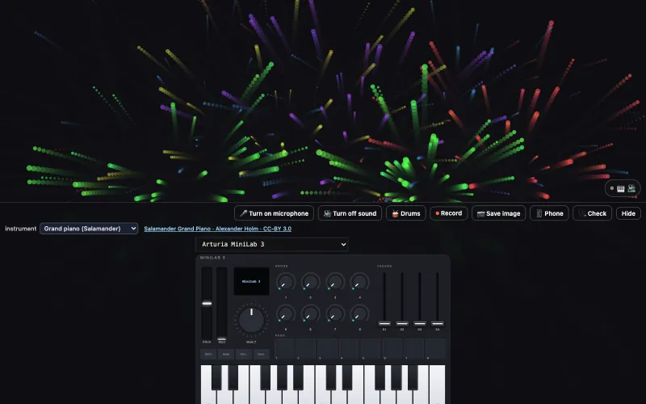
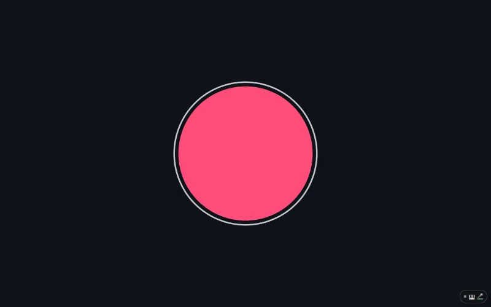
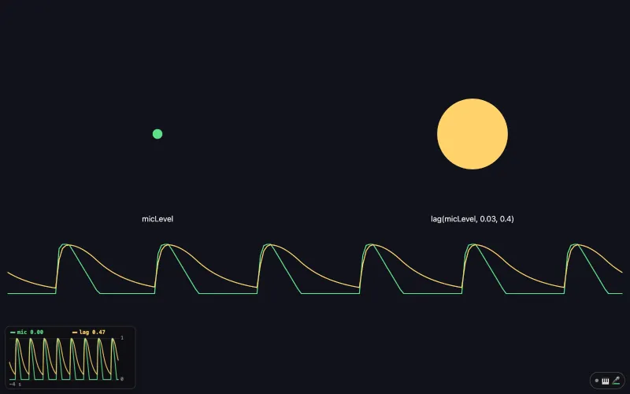
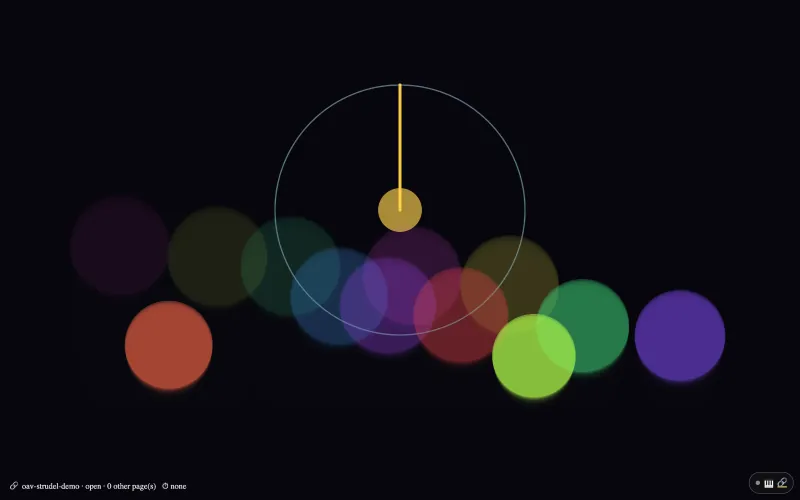
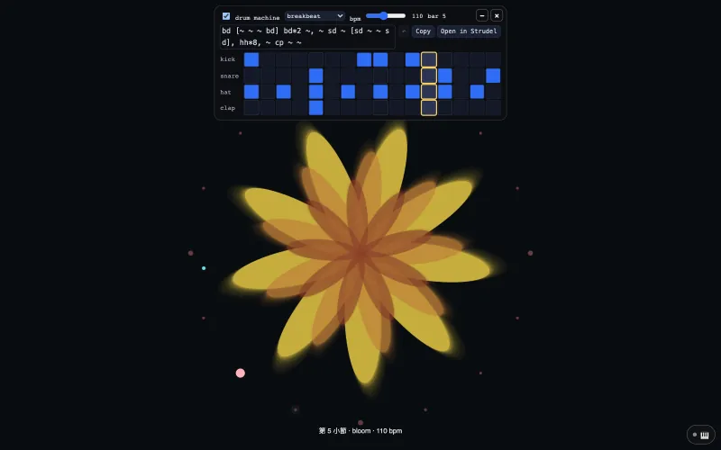
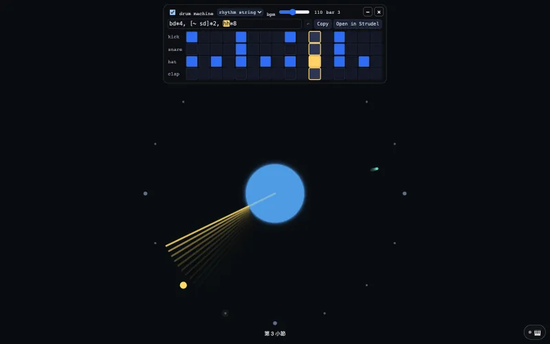
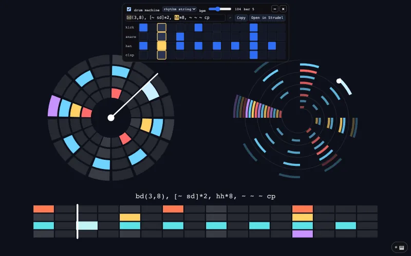
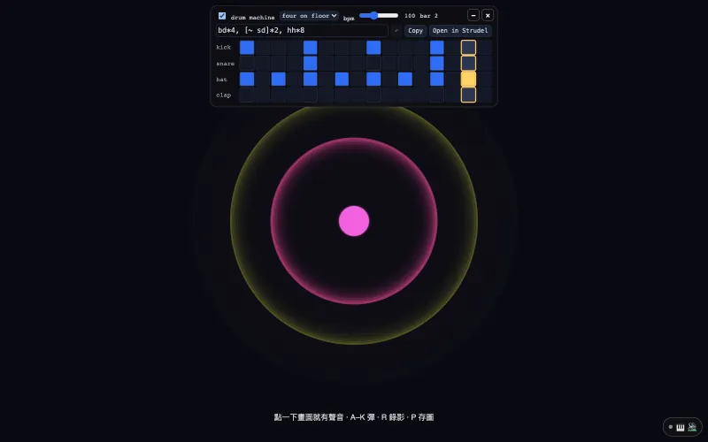

Examples
Twenty-three examples, five routes
Every example runs without hardware. An on-screen piano, QWERTY keys, a simulated performer or a drum machine stands in for instruments. In any example: Space plays the timeline, T is performance mode, F is fullscreen.
Each card says what the example teaches, what it plays with, and what stands in when you have no hardware. Open it, try the three things on its guide card, read the lines it points to, then follow the Next link.
① Route
First open
Read the whole framework in one file, then add one line to a p5 sketch you already have.
-

01
Hello particles
The smallest complete app. Read main.js top to bottom and you know the framework.
No hardware needed- On-screen piano
- QWERTY keys
- Simulated performer
-

15
p5.js in one line
A plain p5 sketch whose first line loads oav-p5.js, then plays from a MIDI controller, an on-screen controller or a phone.
Needs- MIDI controller
No hardware?- On-screen controller
- Phone or iPad
② Route · L1
Anything can be an instrument
A controller, a chord, a microphone, bare hands, a Leap Motion, a phone, Strudel in another tab.
-

16
p5 keys with sound
startSound('piano') in setup(): every key from a MIDI keyboard, the 🎹 on screen or a phone is heard, and bursts into particles.
Needs- MIDI controller
No hardware?- On-screen controller
- Phone or iPad
-

17
p5 microphone
micLevel, bass and beat read the microphone the way p5 reads mouseX: a circle that grows when you speak, and no p5.sound.
Needs- Microphone
No hardware?- Drum machine
-

22
p5 lag: smooth a jumpy value
lag(micLevel, 0.03, 0.4) smooths a jumpy value the way TouchDesigner's Lag CHOP does, in the same seconds; scope() plots both in a corner of the page.
Needs- Microphone
No hardware?- Drum machine
-

09
MIDI controllers
On-screen controllers that move with the real ones you plug in.
Needs- MIDI controller
No hardware?- On-screen controller
-

02
Chord garden
Triads bloom, clusters decay. The world listens to chords, never to keys.
No hardware needed- On-screen piano
- QWERTY keys
- Simulated performer
-

06
Cylinder earth
A 2020 voice-controlled WebGL sketch; mic bands or the built-in drum machine play it.
Needs- Microphone
No hardware?- Drum machine
-

03
Hand instrument
Fingers as an instrument: pinch, fists, four pattern families.
Needs- Camera (hands)
No hardware?- On-screen piano
- Drum machine
-

12
Leap hands
A Leap Motion as an instrument; the mouse is a simulated hand when you have none.
Needs- Leap Motion
No hardware?- Mouse as a hand
-

08
Remote surface
The phone is the instrument panel; the surface grows from the world's params.
Needs- Phone or iPad
No hardware?- On-screen piano
-

23
p5 with Strudel
Strudel plays in another tab and this sketch draws: every note Strudel sends to OAV Virtual MIDI calls notePressed(), and its clock turns drumPhase.
Needs- Strudel in another tab
No hardware?- On-screen controller
③ Route · L3
Bring another picture engine
Bring your own: a node patch, a 2023 p5 sketch, a 2021 particle system.
-

04
WebToe stage
A WebToe node patch performed as a World through ext() bindings.
No hardware needed- On-screen piano
- Simulated performer
-

05
Prebiotic flake
A 2023 MIDI sketch replayed through the framework, now with a Tone.js voice.
No hardware needed- On-screen piano
- Simulated performer
-

07
Firework festival
Close a finger pinch and a firework launches from that hand (2021).
Needs- Camera (hands)
No hardware?- On-screen piano
④ Route · Timeline · Score
Run a show
The show, not just the piece: a timeline you can see, a drum machine that counts the bars, and a score with a director.
-

-

18
p5 drums and bars
startDrums('breakbeat', 110) puts a 16-step drum machine on the page; kickDetected() and cueFired() turn its hits and its bars into the picture.
No hardware needed- Drum machine
-

19
p5 one line of rhythm
startDrums("bd*4, [~ sd]*2, hh*8") writes the drums as one line of rhythm; drumPhase and beatPhase turn a hand once a bar and swell a circle on every beat.
No hardware needed- Drum machine
-

20
p5 rhythm you can see
drawRhythm() draws the rhythm on the canvas as a grid, a circle or a spiral, so a recording has it; the cells and the line on the card edit each other.
No hardware needed- Drum machine
-

13
Score & director
A day of sky as segment lengths: two cuts, a hold, cues, a segment that can crash.
No hardware needed- On-screen piano
- QWERTY keys
⑤ Route · L4
Take it out of the browser
One synced video, from one line in a p5 sketch, with or without a camera.
-

21
p5 record a video
startRecording() saves the canvas and the sketch's own sound as one video, MP4 where the browser can write it; ⏺ and 📷 in the 🎹 panel need no code.
No hardware needed- QWERTY keys
- On-screen controller
- Drum machine
-

-

11
Controller video
The performance video without a camera: the controller you play, drawn live.
Needs- MIDI controller
No hardware?- On-screen piano
- QWERTY keys
- A demo take
Works 05 to 07 are artworks by Che-Yu Wu (2020 to 2023), used here as demos. The framework is MIT. The artworks remain © the artist, all rights reserved.